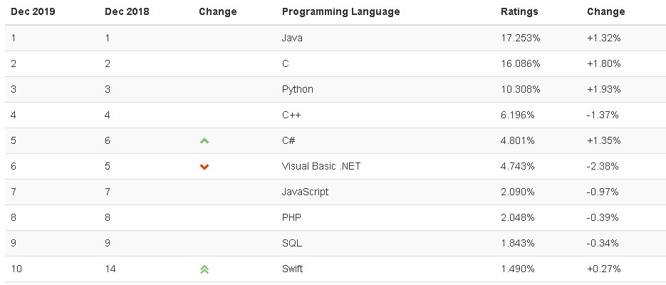
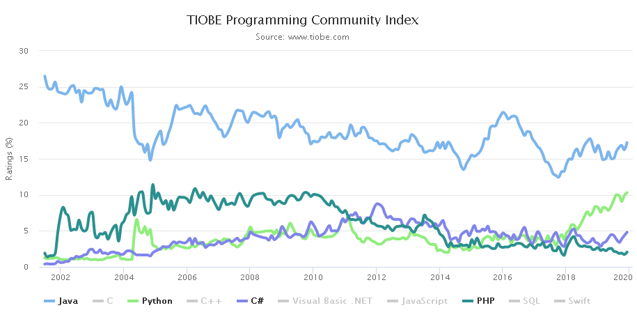
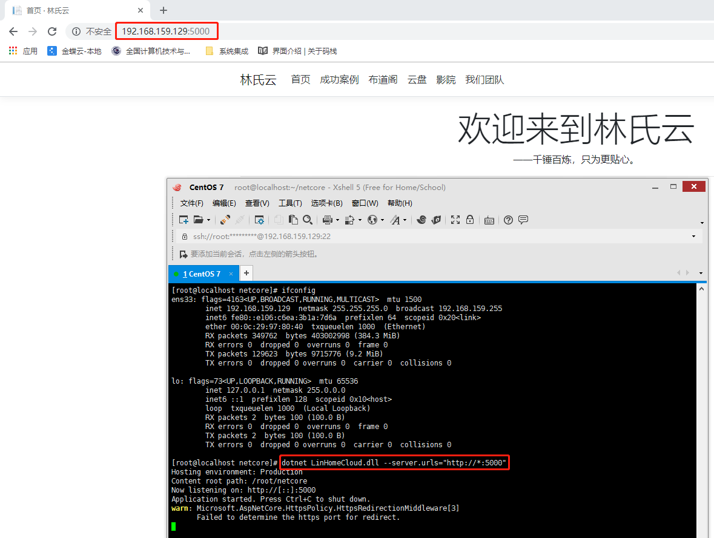

“天下熙熙，皆为利来；天下攘攘，皆为利往。”，越来越多的人涌入IT这个行业，使得技术发展日新月异之外，也会无情淘汰跟不上潮流的人，所以作为IT从业人员，一定要时刻关注前沿技术，免得有朝一日被拍在沙滩上。
附上TIOBE 2019.12编程语言排行前10


========== 原创作品 作者：未闻 出处：博客园 ==========
先看看最后实现的效果：

一、事前准备，这个要看一下，避免后面浪费时间重来
1. CentOS系统：.NET Core2.2最小支持CentOS 7，我用了6.4版本装半天各种组件缺失，浪费了很多时间。
具体参考下微软官方文档：支持的操作系统和依赖项
2. CentOS 7系统安装教程
3. 测试并发布.NET Core网站，用于出现问题时排查是Linux系统问题还是程序本身问题。
4. Linux系统我是最小版本无桌面安装，远程工具用Xshell，FTP工具用WinSCP。这个可以按自己熟悉的来就好。
二、部署步骤
1. 先按下面这篇文章部署，但可能会有点问题，如果继续不下去了可以再跳回来看看，也可以参考微软官方文档。
Asp.NetCore程序发布到CentOs(含安装部署netcore)--最佳实践（一）
2. 步骤简要说明，具体内容上面文章已经说明很清楚，就不重复造轮子了。
step 1. 安装.NET Core SDK
# 安装libicu依赖
yum install libunwind libicu
# 注册Microsoft签名密钥
sudo rpm -Uvh https://packages.microsoft.com/config/rhel/7/packages-microsoft-prod.rpm
#安装
sudo yum update
sudo yum install dotnet-sdk-2.2
# 安装完成
dotnet --infostep 2. 拷贝发布的网站到CentOS上
> 用ftp工具在 root 目录下新建文件夹 netcore。
> 把网站文件上传到netcore文件夹下
> 切换到Xshell，使用命令 cd netcore 进入netcore目录，当前目录会变成如 [root@localhost netcore]#
step 3. 查看防火墙状态，要关闭
#查看服务状态
systemctl status firewalld
# 查看状态
firewall-cmd --state
# 开启
service firewalld start
# 重启
service firewalld restart
# 关闭
service firewalld stopstep 4. 启动服务
这里按照教程的话只能访问localhost的5000端口，可以用*来支持局域网访问
# 启动.NET Core网站（要先 cd 到网站目录）
dotnet LinHomeCloud.dll --server.urls="http://*:5000"三、参考资料